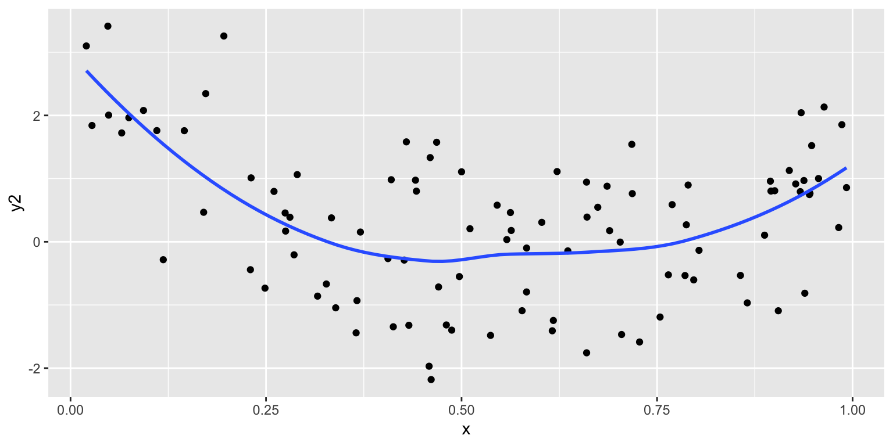

Chapter 7 Data Visualization
This chapter should have
- explanation of the grammar of graphics and how this fits in with tidy data and statistical thinking
- what you can learn about a data set by looking at it in different ways
- cognitive principles
- visual inference
- adding interactivity
7.1 A grammar of graphics
7.1.1 What is a data plot?
- data
- aesthetics: mapping of variables to graphical elements
- geom: type of plot structure to use
- transformations: log scale, …
- layers: multiple geoms, multiple data sets, annotation
- facets: show subsets in different plots
- themes: modifying style
7.1.2 Why?
With the grammar, a data plot becomes a statistic. It is a functional mapping from variable to graphical element. Then we can do statistics on data plots.
With a grammar, we don’t have individual animals in the zoo, we have the genetic code that says how one plot is related to another plot.
7.2 Example: Tuberculosis data
Data on tuberculosis incidence can be found at the World Health Organisation. The case notifications table has been downloaded. We will look at the incidence in Australia. The steps to organising the data are:
- Select the variables, country name and iso3 code, year and the incidence columns as measured by a sputum test. The incidence columns also encode age and gender.
- Gather the data into long form, so that gender and age can be put in separate columns.
- Filter out records for Australia, between years 1997-2012. We also remove values for under 15 because the coding of these age groups is contradictory.
library(tidyverse)
tb <- read_csv("data/TB_notifications_2018-03-18.csv") %>%
select(country, iso3, year, new_sp_m04:new_sp_fu) %>%
gather(stuff, count, new_sp_m04:new_sp_fu) %>%
separate(stuff, c("stuff1", "stuff2", "genderage")) %>%
select(-stuff1, -stuff2) %>%
mutate(gender=substr(genderage, 1, 1),
age=substr(genderage, 2, length(genderage))) %>%
select(-genderage)
tb_au <- tb %>%
filter(country == "Australia") %>%
filter(!(age %in% c("04", "014", "514", "u"))) %>%
filter(year > 1996, year < 2013)We want to look at this data with lots of plots in different ways, with different mappings, to learn different things.
7.2.1 100% charts
ggplot(tb_au, aes(x = year, y = count, fill = gender)) +
geom_bar(stat = "identity", position = "fill") +
facet_grid(~ age) +
scale_fill_brewer(palette="Dark2")100% charts, is what excel names these beasts. What do we learn?
7.2.1.1 Code structure
- Basic plot function is
ggplot - First argument provided is the name of the data,
tb_au - Variable mapping: year is mapped to x, count is mapped to y, gender is mapped to colour, and age is used to subset the data and make separate plots
- The bar geom is used,
geom_bar - We have already counted how many TB incidences are in each combination of categories, so
stat = "identity"says no need to compute the count - We are mostly interested in proportions between gender, over years, separately by age. The
position = "fill"option ingeom_barsets the heights of the bars to be all at 100%. It ignores counts, and emphasizes the proportion of males and females.
7.2.2 Bar charts
ggplot(tb_au, aes(x = year, y = count, fill = gender)) +
geom_bar(stat = "identity") +
facet_grid(~ age) +
scale_fill_brewer(palette="Dark2")7.2.2.2 What do we learn?
- Focus is on counts in each category.
- Different across ages, and years, counts tend to be lower in middle age (45-64)
- 1999 saw a bit of an outbreak, in most age groups, with numbers doubling or tripling other years.
- Incidence has been increasing among younger age groups in recent years.
7.2.3 Side-by-side barcharts
ggplot(tb_au, aes(x = year, y = count, fill = gender)) +
geom_bar(stat = "identity", position="dodge") +
facet_grid(~ age) +
scale_fill_brewer(palette="Dark2")7.2.4 Separate bar charts
ggplot(tb_au, aes(x = year, y = count, fill = gender)) +
geom_bar(stat = "identity") +
facet_grid(gender ~ age) +
scale_fill_brewer(palette="Dark2")7.2.5 Pie charts?
ggplot(tb_au, aes(x = year, y = count, fill = gender)) +
geom_bar(stat = "identity") +
facet_grid(gender ~ age) +
scale_fill_brewer(palette="Dark2") +
coord_polar() +
theme(axis.text = element_blank())Nope! That’s a rose chart. Bar charts in polar coordinates produce rose charts.
7.2.6 Rainbow charts?
ggplot(tb_au, aes(x = 1, y = count, fill = factor(year))) +
geom_bar(stat = "identity", position="fill") +
facet_grid(gender ~ age) A single stacked bar, in each facet. Year is mapped to colour.
7.2.7 Pie charts
ggplot(tb_au, aes(x = 1, y = count, fill = factor(year))) +
geom_bar(stat = "identity", position="fill") +
facet_grid(gender ~ age) +
coord_polar(theta="y") +
theme(axis.text = element_blank())7.2.7.1 What is different in the code description?
coord_polar(theta="y") is using the y variable to do the angles for the polar coordinates to give a pie chart.
7.3 Variable types and mapping
| Type of variable | How to map | Common errors |
|---|---|---|
| Categorical, qualitative | Category + count/proportion displayed, often as an area plot or with a small number of categories mapped to colour or symbol | Not including 0 on the count/proportion axis. Not ordering categories. |
| Quantitative | Position along an axis | Displaying as a bar, especially when showing mean values. Mapping to colour. |
| Date/Time | Time-ordered axis, different temporal resolutions to study long term trend, or seasonal patterns. Lines typically connect measurements to indicate temporal dependence | Time order corrupted |
| Space | Conventional projections of the sphere, map aspect ratio | Wrong aspect ratio |
7.4 Coordinate systems
- Cartesian, polar: most plots are made in Cartesian coordinates. Just a few are in polar coordinates, primarily the pie chart. Polar coordinates use radius and angle to describe position in 2D space. Occasionally measurements like wind (direction and speed) make sense to be plotted in polar coordinates.
- fixed, equal: When variables are made on scales that should be comparable, it may be important to reflect this in the axes limits and page space that the plot takes. (This is different from
theme(aspect.ratio=1)which sets the physical size of the plot to be the same, or in some ratio.) - map: Maps come in conventional formats, most often with a specific aspect ratio of vertical to horizontal axes, that depends on latitude.
- flip: Useful for generating a plot with a categorical variable on the x axis and then flipping it sideways to look at.
df <- tibble(x=runif(100), y=runif(100)*10)
ggplot(df, aes(x=x, y=y)) + geom_point() + coord_fixed()
ggplot(df, aes(x=x, y=y)) + geom_point() + coord_equal()ggplot(df, aes(x=x, y=y)) + geom_point() + coord_fixed(ratio=0.2)ggplot(df, aes(x=x, y=y)) + geom_point() + theme(aspect.ratio=1)7.5 Layering
- Statistical summaries: It is common to layer plots, particularly by adding statistical summaries, like a model fit, or means and standard deviations. The purpose is to show the trend in relation to the variation.
- Maps: Commonly maps provide the framework for data collected spatially. One layer for the map, and another for the data.
df <- tibble(x=runif(100), y1=4*x + rnorm(100),
y2= -x + 10*(x-0.5)^2+ rnorm(100))
ggplot(df, aes(x=x, y=y1)) + geom_point() ggplot(df, aes(x=x, y=y1)) + geom_point() +
geom_smooth(method="lm", se=FALSE)ggplot(df, aes(x=x, y=y1)) + geom_point() +
geom_smooth(method="lm")ggplot(df, aes(x=x, y=y2)) + geom_point() ggplot(df, aes(x=x, y=y2)) + geom_point() +
geom_smooth(method="lm", se=FALSE)ggplot(df, aes(x=x, y=y2)) + geom_point() +
geom_smooth(se=FALSE)
7.6 Colour palettes
- Qualitative: categorical variables
- Sequential: low to high numeric values
- Diverging: negative to positive values
7.6.1 Choropleth map
# Read the tb data
tb <- read_csv("data/TB_notifications_2018-03-18.csv") %>%
select(country, year, new_sp_m04:new_sp_fu) %>%
gather(stuff, count, new_sp_m04:new_sp_fu) %>%
separate(stuff, c("stuff1", "stuff2", "genderage")) %>%
select(-stuff1, -stuff2) %>%
mutate(gender=substr(genderage, 1, 1),
age=substr(genderage, 2, length(genderage))) %>%
select(-genderage)
# Compute relative difference between 2012 and 2002
tb_inc <- tb %>%
filter(year %in% c(2002, 2012)) %>%
group_by(country, year) %>%
summarise(count = sum(count, na.rm=TRUE)) %>%
spread(year, count) %>%
mutate(reldif = ifelse(`2002` == 0, 0, (`2012`-`2002`)/(`2002`))) %>%
ungroup()
# Join with a world map
library(maps)
library(ggthemes)
world_map <- map_data("world")
# Names of countries need to be the same in both data tables
tb_inc <- tb_inc %>%
mutate(country=recode(country,
"United States of America"="USA",
"United Kingdom of Great Britain and Northern Ireland"="UK",
"Russian Federation"="Russia"))
tb_map <- left_join(world_map, tb_inc, by=c("region"="country"))
7.7 Colour blindness
- About 10% of men have some form of colorblindness; less than 0.2% of women are affected. The most common type of color deficiency causes difficulty distinguishing between red and green.
- There are several colour blind tested palettes: RColorbrewer has an associated web site colorbrewer.org where the palettes are labelled, and the
colorblindpackage has palettes which are safe for various types of color deficiency. - You can test your color choices for different forms of colorblindness using the
dichromatpackage. Below is the same plot usng the default two colour scheme of ggplot, and what it looks like to a person with red/green colorblindness. As there are many mutations which can lead to different severities of color deficiency, simulations are not 100% accurate. - A foolproof way to ensure your color palettes are distinguishable is to print them in black and white. If all colors can be distinguished, then your palette is safe to use for all types of colorblindness.
library(scales)
df <- data.frame(x=runif(100), y=runif(100), cl=sample(c(rep("A", 50), rep("B", 50))))
p <- ggplot(data=df, aes(x, y, colour=cl)) + theme_bw() +
geom_point() + theme(legend.position = "none", aspect.ratio=1)
library(dichromat)
clrs <- hue_pal()(3)
p
clrs <- dichromat(hue_pal()(3))
p + scale_colour_manual("", values=clrs) 
7.8 Pre-attentive
Some visual features are “read” without significant cognitive effort and attention. Can you find the odd one out?
df <- data.frame(x=runif(100), y=runif(100), cl=sample(c(rep("A", 1), rep("B", 99))))
ggplot(data=df, aes(x, y, shape=cl)) + theme_bw() +
geom_point(size = 2) +
scale_shape_manual(values = c(4, 5)) +
theme(legend.position="None", aspect.ratio=1)Is it easier now?
ggplot(data=df, aes(x, y, colour=cl)) +
geom_point(size = 2) +
theme_bw() +
theme(legend.position="None", aspect.ratio=1) +
scale_colour_brewer(palette="Dark2")7.9 Proximity
- Basic rule: place the groups that you want to compare close to each other
Here are two different arrangements of the tb data. To answer the question “Is the incidence similar for males and females in 2012 across age groups?” the first arrangement is better. It puts males and females right beside each other, so the relative heights of the bars can be seen quickly. The answer to the question would be “No, the numbers were similar in youth, but males are more affected with increasing age.”
The second arrangement puts the focus on age groups, and is better to answer the question “Is the incidence similar for age groups in 2012, across gender?” To which the answer would be “No, among females, the incidence is higher at early ages. For males, the incidence is much more uniform across age groups.”
tb_au %>% filter(year == 2012) %>%
ggplot(aes(x = gender, y = count, fill = gender)) +
geom_bar(stat = "identity", position="dodge") +
facet_grid( ~ age) +
scale_fill_brewer(palette="Dark2")tb_au %>% filter(year == 2012) %>%
ggplot(aes(x = age, y = count, fill = age)) +
geom_bar(stat = "identity", position="dodge") +
facet_grid( ~ gender) +
scale_fill_brewer(palette="Dark2")7.10 Hierarchy of mappings
- Position - common scale (BEST): axis system
- Position - nonaligned scale: boxes in a side-by-side boxplot
- Length, direction, angle: pie charts, regression lines, wind maps
- Area: bubble charts
- Volume, curvature: 3D plots
- Shading, color (WORST): maps, points coloured by numeric variable
Nice explanation by Peter Aldous
7.11 Adding interactivity to plots
Interaction on a plot can help de-clutter it, by making labels only show on mouse over. Occasionally it can be useful to zoom into parts of the plot. Often it is useful to change the aspect ratio.
The plotly package makes it easy to add interaction to ggplots.
The data
library(plotly)
p <- ggplot(tb_au, aes(x = year, y = count,
fill = gender, label = count)) +
geom_bar(stat = "identity", position = "fill") +
facet_grid(~ age) +
ylab("Proportion") +
scale_fill_brewer(palette="Dark2")
ggplotly(p)7.12 Themes
The ggthemes package has many different styles for the plots. Other packages such as xkcd, skittles, wes anderson, beyonce, ochre, ….
library(xkcd)
ggplot(df, aes(x=x, y=y)) +
geom_point() +
theme_xkcd() +
xkcdaxis(c(0,1), c(0,1)) +
annotate("text", x=0.5, y=0.5, label="Help, I'm lost in here!", family="xkcd", size=5)